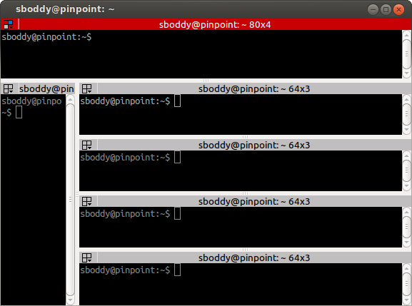
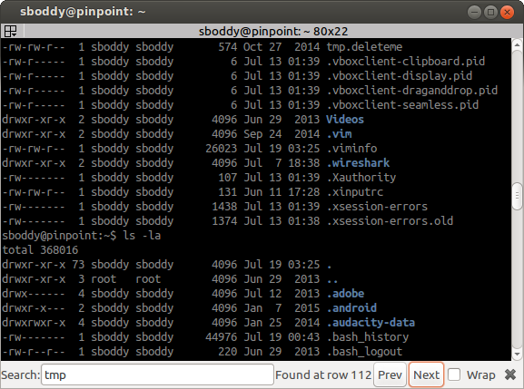

Getting Started¶
This page is an introduction and tutorial that will get you familiar with Terminator’s features. Additional functional areas are explored in other pages, but at the end of this page you’ll be getting a good idea of the power of Terminator.
When you first start Terminator you will get a default, minimal window, looking something like the following:

There may be some cosmetic differences, but it should look fairly similar. It may in fact look a little too minimal to some of you, but this is a deliberate policy. Keep the focus on the terminal, not on a cluttered interface. This is why we don’t waste space on a traditional menu bar and toolbar. Even the terminal scrollbar and titlebar (the red strip) can be turned off, although you do lose ease-of-access to some of Terminators more powerful features if you do.
Many functions are triggered with keyboard shortcuts. But mousers aren’t completely abandoned. Lets look again at the basic interface, but with the two primary menus showing:

Note
You will never see a window that looks like this, as it is impossible to have both menus up at the same time.
The Context Menu - This is the main menu reached with
right-clickover a terminal, and will let you access all the settings, profiles, shortcuts and configurations. It is however kept brief to avoid the mega-menus that sometimes grow unchecked.The Grouping Menu - This is reached with a
clickon the trio of coloured boxes in the titlebar. Later, when we cover Grouping and broadcasting to multiple terminals we will cover this properly. For now it is enough to know where it is and how to trigger it.Note
By default titlebars are shown. If the titlebar has been hidden The Grouping Menu functions will be added as a sub-menu to The Context Menu.
Navigating around¶
Apart from the obvious of clicking the terminal for focus, there are a number of shortcuts that will move the focus around:
| Action | Options | Default Shortcut |
|---|---|---|
| Move focus | Up, Down, Left, Right | Alt+<Arrow> |
| Cycle to terminal | Next, Prev | (Shift+)Ctrl+Tab |
| Focus to terminal | Next, Prev | Shift+Ctrl+N/P |
| Switch to tab # | 1 to 10 | |
| Switch tab | Previous, Next | Ctrl+PgUp/PgDn |
| Context menu | Menu Key |
|
| Help [1] | F1 |
| [1] | Although as you’re reading this, I guess you figured that one out! |
Once the Context menu is visible, it can be navigated with the arrow keys.
Note
For me the two different sets of next/prev shortcuts are a bit of a mystery. Something to look into.
Click-able items¶

Terminator can make strings of text that match a pattern click-able. The user can perform two additional actions on these when the mouse pointer hovers overs the item:
Ctrl+clickWill try to open the item in a suitable program depending on what the type of the item is (see below).
right-clickWill add two entries to The Context Menu:
Open link - Same as
Ctrl+clickThe description might be different depending on the type of the item (see below).
Copy address - Copies the URL to the clipboard
In some types this may be converted into a different form depending on what the item represents.
Here are the built-in formats understood:
These are just the ones built-in by default to Terminator. The Plugins can extend this further with a URL Handler, although strictly speaking it does not have to be a URL - as can be seen from some of the above - just a well defined pattern that can be matched.
Changing the current layout¶
I’ve already used the term layout a few times in this page already. I should define what exactly is meant by a layout.
A layout describes the collection of windows in the current process, the tabs, and how the windows and tabs are divided up into terminals. It also includes the positions, dimensions, as well as other aspects related to how Terminator looks.
Besides the items in the The Context Menu there are three main methods to adjust the layout.
Using the splitters¶
So, by now you’ve probably made a few splits and used the mouse to drag them about, and you now have something resembling the following, minus the highlights:

Terminator lets us rebalance the terminals, equally dividing the available space between the siblings.
The different highlighting shows the siblings. The key thing to understand is that the blue splitters are considered siblings, which are children of the green parent. The green is itself a child of the red parent. By double-clicking the splitter, the space will be divided evenly between the siblings. So, double-clicking any of the blue splitters will give:
If instead we double-click on the green splitter, we get:

But there’s more! We can use two modifier keys to rebalance more collections of
siblings. Shift+double-click the splitter and all children,
grandchildren, and so on, will be rebalanced. Super+double-click and
all parents, grandparents, and so, on, will be re-balanced. You guessed it!
Shift+Super+double-click and all visible terminals
will be rebalanced. It will not affect terminals in other windows or tabs.
Shift+double-click on green:
Super+double-click on green:

Shift+Super+double-click on green:

Dragging and dropping a terminal¶
There are two ways to drag a terminal from one location to another with in the
window. The simplest is to use the titlebar at the top of each terminal. Simply
click-drag, and you will be able to hover over the other terminals and drop
the dragged terminal to move it:

Here you can see a preview of the dragged terminal - scaled if large - and shading to show which area it will cover, which can be the top, bottom, left or right of an existing terminal.
The above action results in the following:

The other way to drag a terminal can be done from within the terminal with
Ctrl+right-click-drag. With this method once you start the
drag, you must release the Ctrl key before releasing the
right-mouse-button. If you do not the drag will cancel.
You can drag between tabs by initiating a drag and hovering over the tab. Terminator will switch to the tab under the cursor, you can then drag to the desired position, and the terminal can be dropped.
You can also drag between Terminator windows provided the windows are part of the same process. By default all windows will be part of the same process. Windows will not be part of the same process if you deliberately turn off the DBus interface with the Preferences or the Command line options when starting Terminator up. Layouts are also currently isolated at a process level for technical reasons.
Using the keyboard¶
Of course, with Terminator being a terminal application, it makes sense to keep your hands on the keyboard as much as possible. So there are many shortcuts that you can tailor to your own preference. Here are the ones that will affect the layout:
| Action | Options | Default Shortcut |
|---|---|---|
| New instance [2] | Super+I |
|
| New window | Shift+Ctrl+I |
|
| New Tab | Shift+Ctrl+T |
|
| Split terminal | Horizontally, Vertically | Shift+Ctrl+O/E |
| Hide window [3] | Shift+Ctrl+Alt+A |
|
| Close window | Shift+Ctrl+Q |
|
| Close terminal | Shift+Ctrl+W |
|
| Toggle fullscreen | F11 |
|
| Resize terminal | Up, Down, Left, Right | Shift+Ctrl+<Arrow> |
| Rotate terminals | (Anti-)Clockwise | (Shift+)Super+R |
| Move Tab | Left, Right | Shift+Ctrl+PgUp/PgDn |
| Zoom terminal | Shift+Ctrl+Z |
|
| Maximise terminal | Shift+Ctrl+X |
| [2] | This is a separate process. As such, drag and drop will not work
to or from this new window, or subsequent windows launched using
the Shift+Ctrl+I while the focus is in the
new instance. |
| [3] | Hide window will currently only work on the first window of the first terminator instance that you start. That is because at present it binds the shortcut globally (it has to, or it cannot unhide) and this can only be done once. This may change in future. |
Resetting the terminal¶
There are two shortcuts available for fixing the terminal if it starts to misbehave.
| Action | Default Shortcut |
|---|---|
| Reset | Shift+Ctrl+R |
| Reset + Clear | Shift+Ctrl+G |
The scrollbar and scrollback buffer¶
As already mentioned, there is a Context Menu item to toggle the scrollbar. There is also a shortcut listed here.
In addition there are shortcuts for moving up and down in the scrollback buffer with more flexibility:
| Action | Options | Default Shortcut |
|---|---|---|
| Toggle scrollbar | Shift+Ctrl+S |
|
| Page [VS] | Up, Down | Shift+PgUp/PgDn |
| X Lines [VS] [XL] | Up, Down | wheelup/wheeldown |
| Page [TS] | Up, Down | |
| Half page [TS] | Up, Down | |
| Line [TS] [MS] | Up, Down |
| [VS] | (1, 2) VTE Shortcuts: Default actions from VTE that are not configurable. |
| [XL] | X Lines: Where X may vary depending on distribution. On mine it is 4. |
| [TS] | (1, 2, 3) Terminator Shortcuts: Additional movement options from Terminator that are configurable. |
| [MS] | Masked Shortcuts: VTE provides default shortcuts for line up/down,
on Shift+Ctrl+Arrow Up/Dn, but they are masked
by shortcuts for resizing terminals. You can disable or reassign
the resizing shortcuts to regain access to the VTE default. |
Search the buffer¶
It is possible to search the buffer, although at this time there is a limitation that the found string is not highlighted.
| Action | Default Shortcut |
|---|---|
| Begin search | Super+Ctrl+F |
Resulting in a search bar at the bottom of the focused terminal:
This has buttons for moving back and forward through the results, as well as an option to wrap the search around.
Zooming the terminal¶
As mentioned above it is possible to zoom into and out of a terminal. There are also some modifiers to zoom more than just the current terminal.
| Action | Default Shortcut |
|---|---|
| Target in [4] | Ctrl++/wheelup |
| Target out | Ctrl+-/wheeldown |
| Target reset | Ctrl+0 |
| +Receivers in | Shift+Ctrl+wheelup |
| +Receivers out | Shift+Ctrl+wheeldown |
| +Receivers reset | N/A (TBD, plus in/out) |
| All in | Super+Ctrl+wheelup |
| All out | Super+Ctrl+wheeldown |
| All reset | N/A (TBD, plus in/out) |
| [4] | Target terminal is the current terminal when using the
keyboard shortcuts, or the terminal under the mouse when using
the wheelup/wheeldown. |
Setting Titles¶
If you’re anything like me, you’ve spent time clicking among the half a dozen different terminals in the taskbar, trying to find the right one. Or maybe for you it is with tabs.
In Terminator you can rename three things:
| Edit | Mouse | Default Shortcut |
|---|---|---|
| Window title | N/A | Ctrl+Alt+W |
| Tab title | double-click tab |
Ctrl+Alt+A |
| Terminal title | double-click titlebar |
Ctrl+Alt+X |
Additionally all three can be saved/loaded from a layout, or the window title can be set using a command line option.
Insert terminal number¶
These shortcuts let you enumerate your terminals. It is handy if you need to login to a number of sequentially numbered machines. With multiple terminals the ordering may seem strange, but this is due to the nature of the splitting and the order in which the splits were performed.
| Action | Default Shortcut |
|---|---|
| Insert terminal number | Super+1 |
| Insert zero padded terminal number | Super+0 |
These actions can also be done from The Grouping Menu.
Next/Prev profile¶
It is possible to cycle back and forth through the available profiles that are defined in the Profiles tab of the Preferences Window, changing the behaviour and appearance of the current terminal.
| Action | Default Shortcut |
|---|---|
| Next profile | |
| Previous profile |
In both cases there is currently no default shortcut set. I’m not convinced they would be used often enough to warrant assigning them. For those that find it useful, the feature is there to be configured.